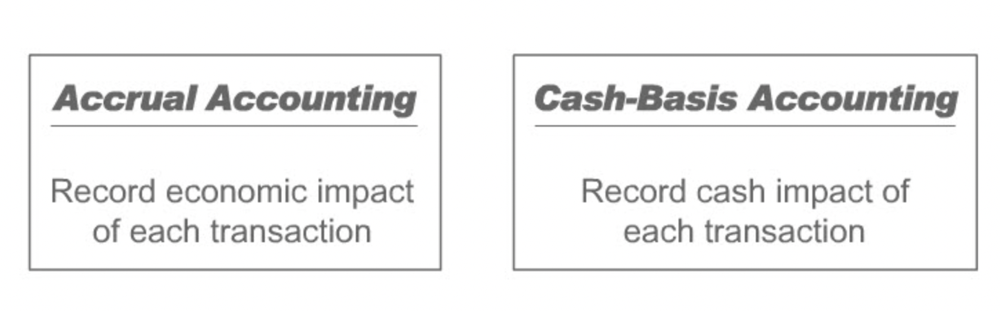

Terms and Concepts
Contents
Terms and Concepts¶
Overview of Financial Reports¶
Balance Sheet¶
“A balance sheet, also called a statement of financial position, is a report of the organization’s financial situation at a particular point in time. It lists the entity’s assets, liabilities and owners’ equity. It is called a balance sheet because it reports the balance or amount in each asset, liability and owners’ equity account.”
Balance sheet is called a balance sheet because it reports the balance or amount in each asset, liability and owners’ equity account.
A balance sheet describes an entity’s financial position at a point in time; the other two financial statements describe financial flows over a period of time.
Cash owned by a business is an asset of the business; a bank loan represents a liability of the business - an obligation to repay the loan.
Income Statement¶
“The income statement details the entity’s operating performance during a specific period of time, known as the accounting period, displayed at the top of the statement.”
“The income statement lists the revenues earned and expenses incurred during the period; subtracting expenses from revenues results in the measurement of net income for the period.”
Statement of Cash Flows¶
“The statement of cash flows details the sources and uses of cash by the entity over an accounting period. For the convenience of financial statement users, the statement of cash flows is organized by type of business activity: operating, investing and financing.”
Introduction to Concepts¶
There are 10 accounting concepts
Entity
Money Measurement
Going Concern
Consistency
Materiality
Dual Aspect
Historical Cost
Realization
Matching
Conservatism
“Accounting concepts form the basis of a large number of accounting standards that provide guidance to accountants on how to account for specific types of transactions.”
Entity¶
“The entity concept is the most basic accounting concept. It states that accounts are kept for an entity as distinct from the people who own, run or do business with the entity.”
“The entity concept is simple but powerful. It allows the accountant to draw a virtual boundary around the entity and hence limit the activities that need to be tracked and recorded.”
Any organization including non-profit agency that needs to keep and communicate financial records can be an accounting entity. Whether or not it makes or aims to make a profit is irrelevant.
Money Measurement Concept¶
“The money measurement concept states that financial accounting deals only with things that can be represented in monetary terms.”
For example, merchandise brought by an entity can be measured in dollar terms and hence included in the balance sheet. In contrast, eventhough the employees of any entity adds value to the business but that value can’t be measured in dollar terms. Hence, employees’ value is not added in the balance sheet.
Going Concern Concept¶
“Going concern is accounting’s way of saying that an entity is expected to remain in operation for the indefinite future. The going concern concept directs the accountant to explicitly make this assumption in the absence of evidence to the contrary.”
“The significance of the going concern concept can be understood by considering the alternative: that the entity is about to go out of business. If this was the case, all its resources should be valued at their current worth to potential buyers. The going concern concept directs the accountant, under the normal course of business, to ignore this doomsday scenario.”
Consistency Concept¶
“The consistency concept states that an entity should use the same accounting methods and procedures from period to period unless it has a sound reason to change methods.”
“The consistency concept needs to be explicitly stated because some accounting standards allow a fair degree of variation in how transactions are recorded. The consistency concept reduces the likelihood of opportunistic or whimsical changes in accounting procedures by an entity.”
Note that the consistency concept does not forbid a switch in accounting procedures. If an entity does make a procedural accounting change, its management and auditors are required to note the change in their discussion of the entity’s accounts.”
“Note also that in the context of accounting concepts, consistency means consistency over time.”
Materiality Concept¶
“The materiality concept states that an entity need only apply proper accounting to items that are material, i.e., significant to potential users of the financial statements. This concept allows the accountant to be practical in choosing the appropriate degree of precision in the accounts.”
“Just what is material and not material is not made specific in accounting. The general rule is that, “An item is material if its disclosure would impact the decisions of the users of the accounts.” The application of this rule requires accountants to judge what users of financial statements would consider significant to their decisions. As in most matters requiring judgments, reasonable people can differ. Determining materiality is no exception.”
Quality Attributes¶
“In any financial accounting system, there are a number of decisions to be made: whether to record a transaction, when to record it and how to record it. Also, there are different ways to aggregate the account balances in financial reports. Any such system must have a set of criteria or guidelines to help make those decisions.”
Relevance and Reliability¶
“In financial accounting, the quality of the output depends on the relevance and reliability of the data presented.”
“Relevance refers to the timeliness and usefulness of the information to its users. Reliability refers to the objectivity and verifiability of the information. Different ways of recognizing, measuring and recording an event may yield more or less reliable or more or less relevant account balances.”
“Often, judgment has to be used to make the trade-off between relevance and reliability, i.e., there isn’t a way to record a transaction that will maximize both these desirable properties. In such cases, reliability is generally given precedence over relevance.”
Accrual Accounting¶
“Accrual accounting is an important tool in the quest for relevance in accounting reports. This method of accounting provides information about a company’s assets, liabilities and owners’ equity that cannot be obtained by accounting for only cash receipts and outlays.”
“Accrual accounting focuses on the economic characteristics of transactions rather than their cash flows.” 
Accrual vs. Cash-Basis¶
“Accrual accounting attempts to record the financial effects on a business of transactions that have economic consequences for the business in the accounting period when the transaction occurs rather than only in the periods when cash is received or paid by the company.”
“When applied consistently, accrual accounting is a means of enhancing the relevance of financial statements. Cash-basis accounting results in inadequate and misleading financial statements for all but the most simple of businesses. As a result, accrual accounting is the accounting system of choice throughout the world today.”
GAAP¶
“Financial accounting reports are used by investors, regulators, employees, customers and a number of other external parties. So that this diverse list of users can understand an entity’s financial statements, accountants must follow certain guidelines or standards when preparing financial accounting reports. These principles, more numerous than the accounting concepts, are explicit rules that are used to improve the reliability and comparability of financial reports.”
“Generally Accepted Accounting Principles (GAAP) are guidelines that accountants, managers and auditors must follow while preparing and auditing accounting information for external reporting purposes. For example, GAAP requires the use of accrual accounting. The application of GAAP rules results in reasonably reliable financial information, while also permitting each entity to reasonably describe its own business strategy and performance through relevant accounting information.”
“The Financial Accounting Standards Board (FASB) determines GAAP in the United States. There also exists an International Accounting Standards Board (IASB), which, among other activities, has undertaken a major effort to harmonize accounting standards around the world.”
IFRS¶
“The International Accounting Standards Board (IASB) publishes International Financial Reporting Standards (IFRS).”
Principles vs Rules¶
“IFRS tends to be stated as in the form of broad principles. In contrast, much of GAAP tends to be stated in the form of bright-line rules. For example, as you will learn later along with various accounting rules, under GAAP if a term of a lease is equal to 75 percent of the economic life of the leased property, the lease will be accounted for as a capital lease. On the other hand, if the lease item is equal to 74 percent or less of the leased property’s economic life, the lease will be accounted for as an operating lease. IFRS takes a different approach. It makes the distinction between a capital and an operating lease based on which party - the lessor or the lessee - substantially bears the risk and reward of ownership.”
“The distinction between the principle based and rule based accounting standards is important. Under a principle standards model, the accounting for transactions is more likely to reflect the substance of the transaction. Under a rule based standards model, the accounting for a transaction is more likely to reflect the form of the transaction.”
“As GAAP and IFRS converge, it is anticipated that GAAP will become more principle based.”